My name is Andrey and I am a trained Game Developer with 7 years of expertise in Unity, C# and Game Development. I enjoy the entire process of transforming unique ideas into an exciting and fun game, from brainstorming concepts to seeing everything come together in the final product!
I have a handful of Client Projects along with game jam and passion projects that I have developed and released over the years, thus I'm confident in my programming and design skills.
I also enjoy making various Game Assets from Templates to Systems and even Props and Packs!
Ultimately, I'm driven by a passion for game development, always eager to bring fresh ideas to life and tackle new creative challenges
Game Developer
and Programmer

Grocery Dash is a 2-4 player local co-op game set in a supermarket, focusing on speed and teamwork. As Project Owner, I guided design decisions and wrote all the code while also assisting with 3D modeling. My team won an award for the best game of the year!
- Won an award for game of the year
- Led the team as Project Owner, guiding the vision and key design decisions.
- Wrote all the code and contributed to 3D modeling, showcasing versatility in game development
Client WorkProduct OwnerLead ProgrammerTeamwork
My team and I developed a puzzle-solving game for our client Nordex - a company specializing in wind turbine manufacturing. As Project Owner and Lead Programmer, I designed all puzzles to test engineering skills and wrote the code to make them fun and bring them to life.
- Designing puzzles to accurately assess human skills and qualities
- Collaborating with Client through clear communication and effective solutions.
- Led the project as both Project Owner and Lead Programmer, guiding the team and making key decisions.
Game AssetGame DesignCode
Cursed Chambers includes a variety of character classes with unique weapons. The combat system features player dashes, intelligent enemy AI, player abilities, hit effects, enemy spawn system, traps and boss battles. This game also has a level-up and stats system, collectables, and a fully functioning dialogue and quest system for storytelling.
- Implemented an advanced combat system, improving overall gameplay
- Integrated a fully functioning dialogue and quest system, allowing for immersive storytelling and player interaction
- Developed a comprehensive level-up and stats system that promotes player engagement and progression
Game DesignGame AssetCode
This is the latest game asset template that I've been working on. It's a 2D platformer with all the necessary building blocks a developer would need to kickstart their project! Includes movement abilities, enemies, collectables, UI and more. Fully customizable and game-ready!
- Engaging Combat System
- Skilltree and Advanced Movement Abilities
- Dialogue, Quests and Storytelling!
Finished ProductGame DesignCode
Knighty began as a simple 2D platformer tutorial and evolved into a larger project with diverse enemies, collectibles, weapons, and mechanics. It provided a valuable learning experience in game design, coding, project organization, and releasing a finished product..
- Created a comprehensive game design featuring various enemies, collectibles, and mechanics
- Improved organizational skills by maintaining a structured workflow throughout development
- Enhanced coding skills by implementing complex game features and mechanics
Game JamMobile Game
This game, made for the GMTK 2022 game jam with the theme "Roll of the Dice," involves rolling dice to activate tile effects multiplied by the rolled number. It proudly placed in the top 500 out of 3000 submissions.
- Created a system where player choices and luck interact, adding depth and strategy to the game.
- Achieved a top 500 ranking out of 3000 submissions, demonstrating the game's quality and appeal.
- Gained experience in completing a game within a limited timeframe, refining my time management and problem-solving skills.
TemplatesSystems3D Packs
I also specialise in making Game Assets that help other developers create games and bring their ideas to life. I've developed various Templates, Systems, 3D props.
My goal is to provide high-quality resources that streamline the development process and enhance the overall gaming experience. I’m proud to say that I’ve sold over 500 assets and reached more than 15,000 developers in the process!
- Reached over 5000 creators
- Helped over 100 developers with their project
- An average of 5 star reviews
 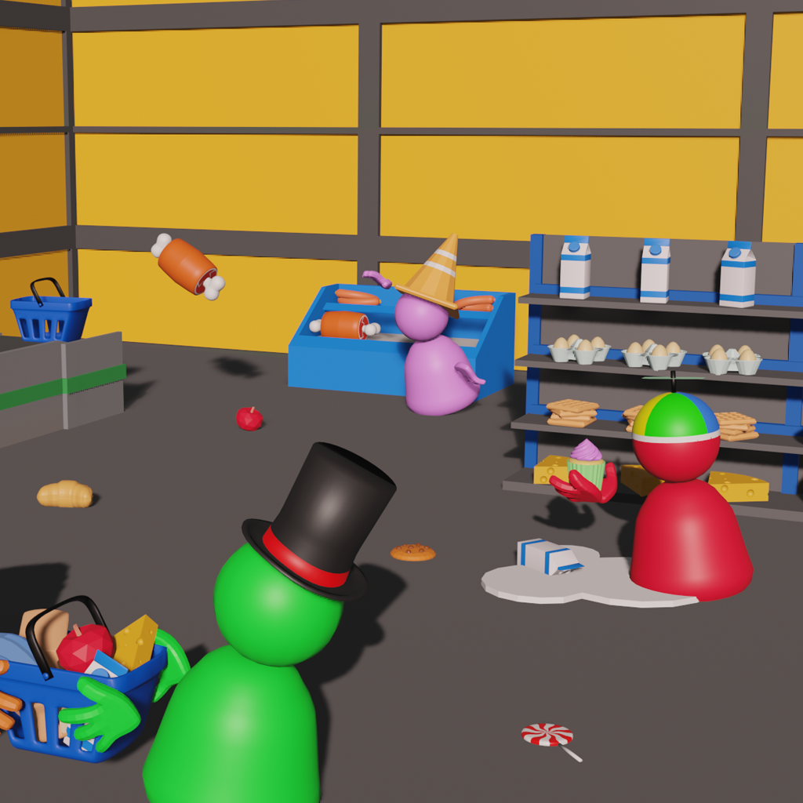
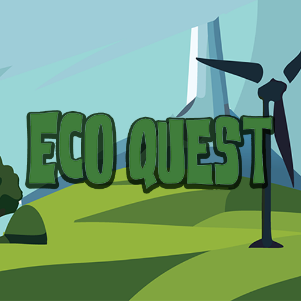
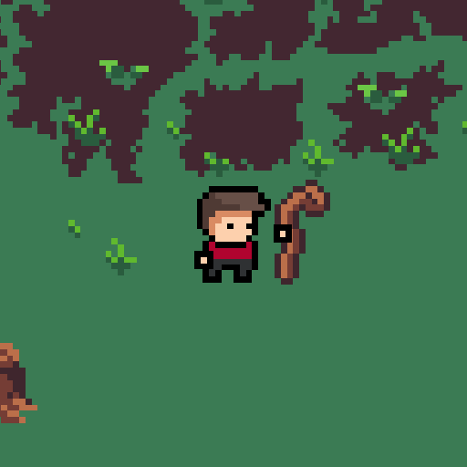
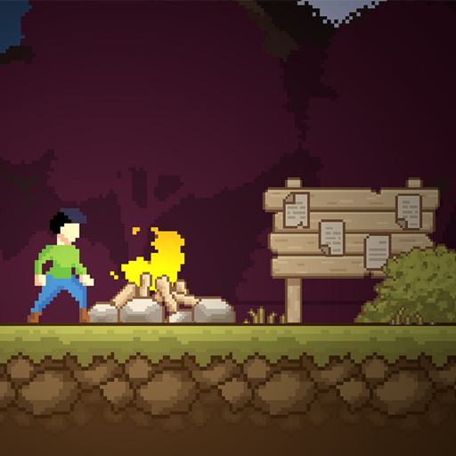
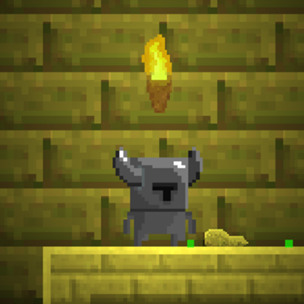
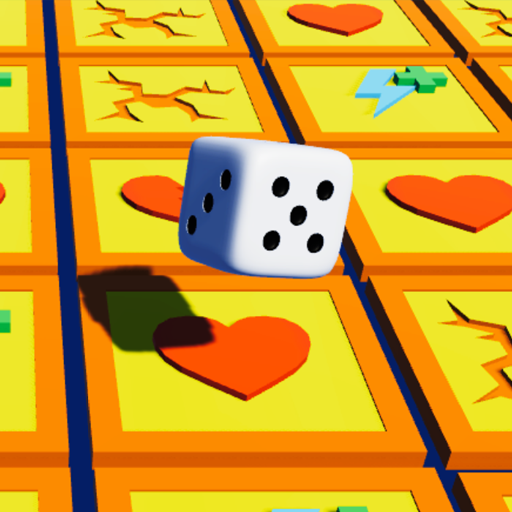
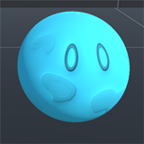
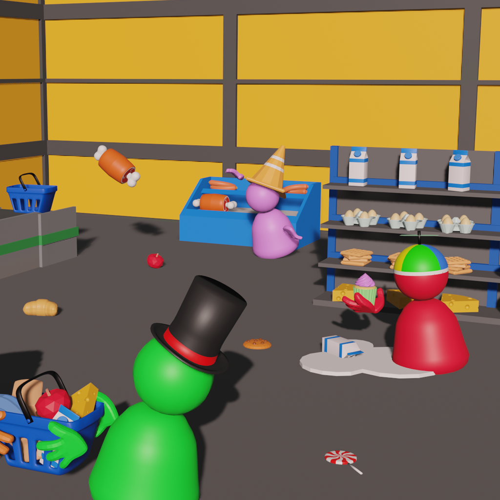
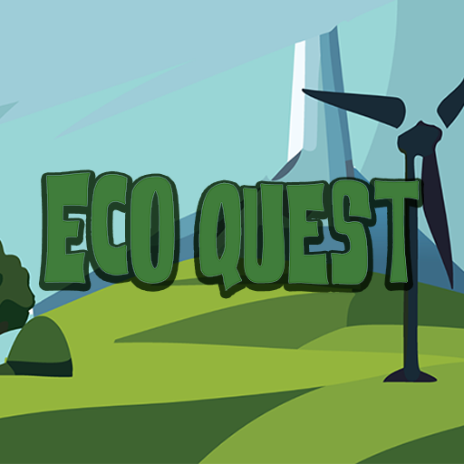
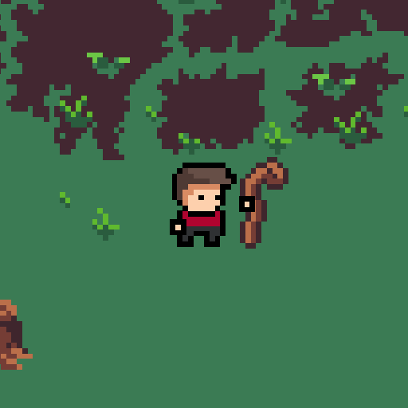
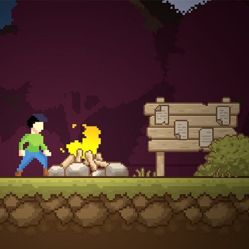
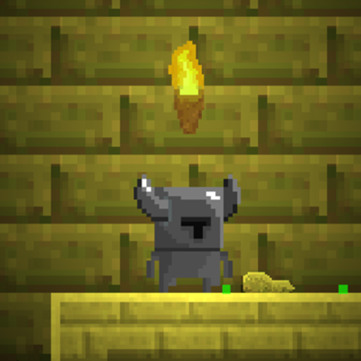
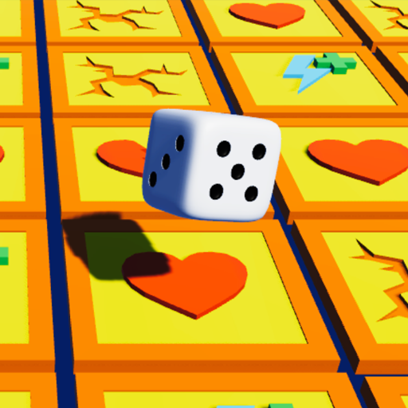
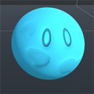